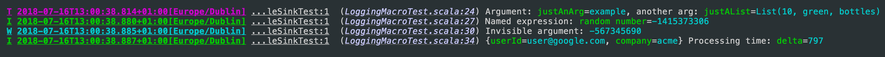
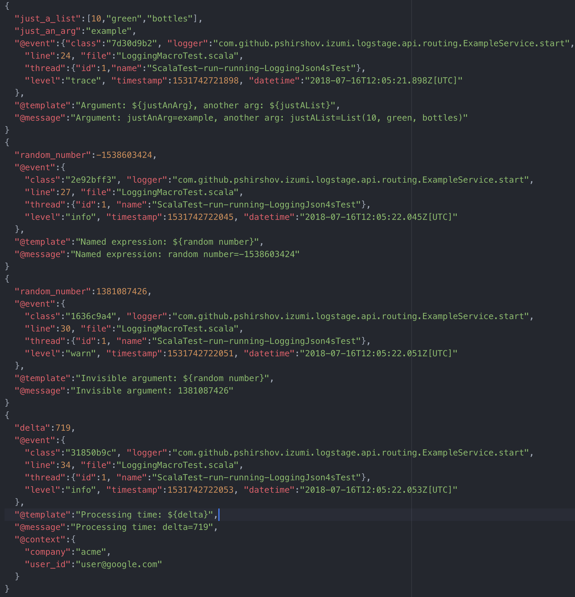

LogStage
LogStage is a zero-cost structural logging framework for Scala & Scala.js
Key features:
- LogStage extracts structure from ordinary string interpolations in your log messages with zero changes to code.
- LogStage uses macros to extract log structure, its faster at runtime than a typical reflective structural logging frameworks,
- Log contexts
- Console, File and SLF4J sinks included, File sink supports log rotation,
- Human-readable output and JSON output included,
- Method-level logging granularity. Can configure methods
com.example.Service.startandcom.example.Service.doSomethingindependently, - Slf4J adapters: route legacy Slf4J logs into LogStage router
Dependencies
libraryDependencies ++= Seq(
// LogStage core library
"io.7mind.izumi" %% "logstage-core" % "1.0.9-SNAPSHOT",
// Json output
"io.7mind.izumi" %% "logstage-rendering-circe" % "1.0.9-SNAPSHOT",
// Router from Slf4j to LogStage
"io.7mind.izumi" %% "logstage-adapter-slf4j" % "1.0.9-SNAPSHOT",
// LogStage integration with DIStage
"io.7mind.izumi" %% "distage-extension-logstage" % "1.0.9-SNAPSHOT",
// Router from LogStage to Slf4J
"io.7mind.izumi" %% "logstage-sink-slf4j " % "1.0.9-SNAPSHOT",
)
Overview
The following snippet:
import logstage.IzLogger
import scala.util.Random
val logger = IzLogger()
// logger: IzLogger = izumi.logstage.api.IzLogger@1b67f8de
val justAnArg = "example"
// justAnArg: String = example
val justAList = List[Any](10, "green", "bottles")
// justAList: List[Any] = List(10, green, bottles)
logger.trace(s"Argument: $justAnArg, another arg: $justAList")
// custom name, not based on `val` name
logger.info(s"Named expression: ${Random.nextInt() -> "random number"}")
// print result without a name
logger.warn(s"Invisible argument: ${Random.nextInt() -> "random number" -> null}")
// add following fields to all messages printed by a new logger value
val ctxLogger = logger("userId" -> "user@google.com", "company" -> "acme")
// ctxLogger: IzLogger = izumi.logstage.api.IzLogger@30f511f
val delta = Random.nextInt(1000)
// delta: Int = 527
ctxLogger.info(s"Processing time: $delta")
Will look like this in string form:

And like this in JSON:

Note:
- JSON formatter is type aware!
- Each JSON message contains
@classfield with holds a uniqueevent classidentifier. All events produced by the same source code line will share the sameevent class.
Syntax Reference
1) Simple variable:
logger.info(s"My message: $argument")
2) Chain:
logger.info(s"My message: ${call.method} ${access.value}")
3) Named expression:
logger.info(s"My message: ${Some.expression -> "argname"}")
4) Invisible named expression:
logger.info(s"My message: ${Some.expression -> "argname" -> null}")
5) De-camelcased name:
logger.info(${camelCaseName -> ' '})
Basic setup
import logstage.{ConsoleSink, IzLogger, Trace}
import logstage.circe.LogstageCirceRenderingPolicy
val textSink = ConsoleSink.text(colored = true)
// textSink: ConsoleSink = izumi.logstage.sink.ConsoleSink$ColoredConsoleSink$@78ad3699
val jsonSink = ConsoleSink(LogstageCirceRenderingPolicy(prettyPrint = true))
// jsonSink: ConsoleSink = izumi.logstage.sink.ConsoleSink@5ca8805a
val sinks = List(jsonSink, textSink)
// sinks: List[ConsoleSink] = List(izumi.logstage.sink.ConsoleSink@5ca8805a, izumi.logstage.sink.ConsoleSink$ColoredConsoleSink$@78ad3699)
val logger: IzLogger = IzLogger(Trace, sinks)
// logger: IzLogger = izumi.logstage.api.IzLogger@32c060d1
val contextLogger: IzLogger = logger("key" -> "value")
// contextLogger: IzLogger = izumi.logstage.api.IzLogger@234881ee
logger.info("Hey")
contextLogger.info("Hey")
Log algebras
LogIO, LogIO2 & LogIO3 algebras provide a purely-functional API for one-, two-, and three-parameter effect types respectively:
import logstage.{IzLogger, LogIO}
import cats.effect.IO
val logger = IzLogger()
// logger: IzLogger = izumi.logstage.api.IzLogger@3bfa6f8d
val log = LogIO.fromLogger[IO](logger)
// log: LogIO[IO] = logstage.LogIO$$anon$1@491fb3e
log.info(s"Hey! I'm logging with ${log}stage!").unsafeRunSync()
I 2019-03-29T23:21:48.693Z[Europe/Dublin] r.S.App7.res8 ...main-12:5384 (00_logstage.md:92) Hey! I'm logging with log=logstage.LogIO$$anon$1@72736f25stage!
LogIO.log/LogIO2.log/LogIO3.log/IzLogger.log let you refer to an implicit logger’s methods without having to name a logger variable
import logstage.LogIO
import logstage.LogIO.log
def logfun[F[_]: LogIO]: F[Unit] = {
log.info(s"I'm logging with ${log}stage!")
}
Adding Custom Context to Loggers
LogIO* algebras can be extended with custom context using their .withCustomContext method, same as IzLogger:
import cats.effect.IO
import cats.syntax.all._
import logstage.LogIO
import io.circe.Printer
import io.circe.syntax._
def importEntity(entity: Entity)(implicit log: LogIO[IO]): IO[Unit] = {
val logWithContext: LogIO[IO] = {
log.withCustomContext(
"ID" -> entity.id,
"entityAsJSON" -> entity.asJson.printWith(Printer.spaces2),
)
}
load(entity).handleErrorWith {
case error =>
logWithContext.error(s"Failed to import entity: $error.").void
// JSON message includes `ID` and `entityAsJSON` fields
}
}
ZIO environment support
LogZIO.log lets you carry LogZIO capability in environment.
Example:
import logstage.{IzLogger, LogIO3, LogZIO}
import logstage.LogZIO.log
import zio.{Has, URIO}
val fn: URIO[LogZIO, Unit] = {
log.info(s"I'm logging with ${log}stage!")
}
// fn: URIO[LogZIO, Unit] = zio.ZIO$Read@5412a7ad
val logger: LogZIO.Service = LogIO3.fromLogger(IzLogger())
// logger: LogZIO.Service = logstage.LogIO$$anon$1@3cfc3ca5
zio.Runtime.default.unsafeRun {
fn.provide(Has(logger))
}
Adding FiberId to log messages
LogZIO.withFiberId provides a LogIO instance that logs the current ZIO FiberId in addition to the JVM thread id:
val logger: LogZIO.Service = LogZIO.withFiberId(IzLogger())
// logger: LogZIO.Service = logstage.LogZIO$$anon$1@175f321e
zio.Runtime.default.unsafeRun {
fn.provide(Has(logger))
}
I 2019-03-29T23:21:48.760Z[Europe/Dublin] r.S.App9.res10 ...main-12:5384 (00_logstage.md:123) {fiberId=0} Hey! I'm logging with log=logstage.LogZIO$$anon$1@c39104astage!
Tagless trifunctor support
LogIO3Ask.log adds environment support for all trifunctor effect types with an instance of MonadAsk3[F] typeclass from BIO hierarchy.
Example:
import logstage.{LogIO3, LogIO3Ask, IzLogger}
import logstage.LogIO3Ask.log
import zio.{Has, ZIO}
def fn[F[-_, +_, +_]: LogIO3Ask]: F[Has[LogIO3[F]], Nothing, Unit] = {
log.info(s"I'm logging with ${log}stage!")
}
val logger = LogIO3.fromLogger(IzLogger())
// logger: LogIO3[ZIO] = logstage.LogIO$$anon$1@34f01b06
zio.Runtime.default.unsafeRun {
fn[ZIO].provide(Has(logger))
}
Custom JSON rendering with LogstageCodec
If you define an instance of LogstageCodec for your type, it will be used when rendering your logs to JSON instead of the default renderer.
You can derive instances of LogstageCodec from Circe codecs with logstage-rendering-circe or write them manually.
Example:
import io.circe.Codec
import io.circe.derivation
import logstage.LogstageCodec
import logstage.circe.LogstageCirceCodec
final case class KV(key: String, value: Int)
object KV {
implicit val circeCodec: Codec[KV] = derivation.deriveCodec[KV]
implicit val logstageCodec: LogstageCodec[KV] = LogstageCirceCodec.derived[KV]
}
If you want to make sure that all values in your interpolations are rendered using LogstageCodec instead of default renderer, use IzStrictLogger/LogIOStrict types from logstage.strict package:
import logstage.strict.IzStrictLogger
import logstage.ConsoleSink
import logstage.circe.LogstageCirceRenderingPolicy
val logger = IzStrictLogger(sink = ConsoleSink(LogstageCirceRenderingPolicy()))
// logger: IzStrictLogger = izumi.logstage.api.strict.IzStrictLogger@759efdfa
logger.info(s"Got ${KV("key", 7) -> "KeyValue"}")
SLF4J Router
When not configured, logstage-adapter-slf4j will log messages with level >= Info to stdout.
Due to the global mutable nature of slf4j, to configure slf4j logging you’ll have to mutate a global singleton StaticLogRouter. Replace its LogRouter with the same one you use elsewhere in your application to use the same configuration for Slf4j.
import logstage.IzLogger
import izumi.logstage.api.routing.StaticLogRouter
val myLogger = IzLogger()
// myLogger: IzLogger = izumi.logstage.api.IzLogger@28dafef8
// configure SLF4j to use the same router that `myLogger` uses
StaticLogRouter.instance.setup(myLogger.router)